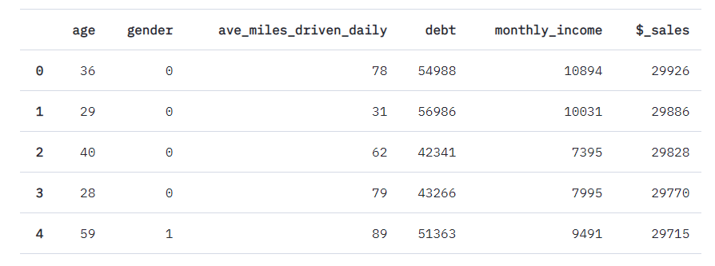
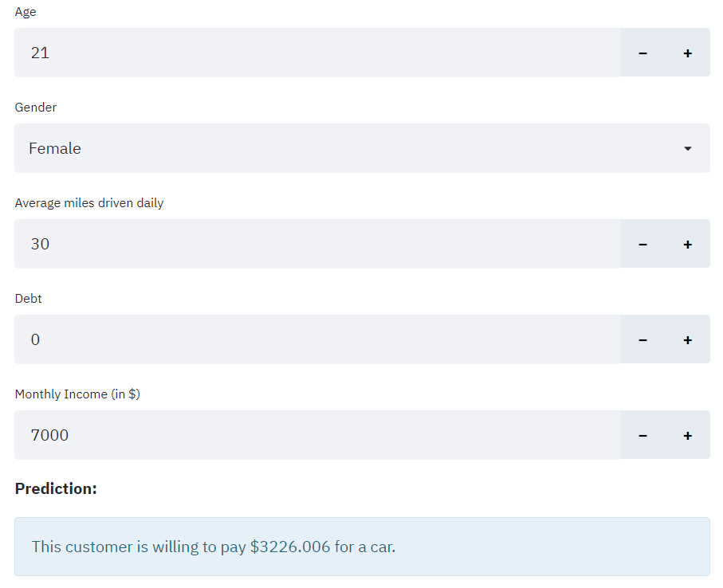

This article is the static version of the demo with the same title. Click here for the full experience.
Newbie data scientists tend to put the accuracy of their models on a pedestal. Couple this with their disdain of the social sciences and they end up automating discrimination instead of fighting it.
I admit I was guilty of this too. “If we just replace flawed humans with cold, calculating machines,” I thought, “then we can eliminate discrimination in the world.” Seems reasonable, right? But, this view is naive. Machines can be flawed too and their creators don’t have to be evil for them to be so.
Fairness doesn’t follow from the accuracy of our models. In fact, the two are inherently conflicted. This is what I call the Accuracy-Fairness Dilemma:
To maximize accuracy, models have to learn everything they can from the data - including the human biases embedded in them. But to maximize fairness, they have to unlearn the human biases.
We want to teach machines as much as we can, but we may also end up teaching them the mistakes of the past.
A Concrete Example
Car salespeople have this uncanny ability to predict how much their customers are really able to pay for a car, despite the latter’s denials. It takes years of practice to do this well. But, wouldn’t it be nice if we could build a machine learning model that can do the same? With it, we could rake in a lot more profits with much less experience under our belt.
Here we have historical data on car sales of a certain car retailer. The first five columns contain customer data while the last column contains how much customers paid for a car.

A newbie data scientist would just blindly maximize the accuracy of their models without taking ethical and social considerations into account.
Try it Yourself
Please proceed to this link for the demo.

How to Measure Unfairness
If you deployed this model to production, it would’ve misled your company into charging women customers $1354.976 more than the men for no logical reason at all. That would be unethical and discriminatory.
I know anecdotes aren’t enough to prove theories. Thus, we need a more mathematical approach to show that our model really is discriminatory.
There are a lot of valid ways to measure unfairness, but I followed the steps below for this demo:
- Partition the dataset into two groups;
- Oversample the groups to make their sizes equal; and
- Use the following formula to calculate the unfairness of the model:
unfairness = Mean(Predictions(Women) - Predictions(Men))
Notice that if unfairness = 0, then we can say our model treats women and men customers equally. In this case, unfairness = 1354.976. This means that the model recommends us to charge women $1354.976 more than men, on average.
Conclusion
Machine learning models merely amplify our biases - not eliminate them.
The Accuracy-Fairness Dilemma also generalizes to all models, even our mental models of the world. We have a lot of incentives to make them as accurate as possible. But, we can’t just blindly optimize their accuracy because we may also end up teaching them the mistakes of the past.
FAQs
Why don’t we prevent the model from accessing sensitive data while training?
Uncheck ‘Include sensitive data’ in the sidebar to the left and redo the demo. I can guarantee the unfairness wouldn’t be eliminated.
What if the data isn’t “clean” in the first place?
You shouldn’t fudge with or delete someone’s data just because they seem “odd” along with everybody else’s. We are unique in our own way and our data reflect that. It is what it is and you just have to deal with it.